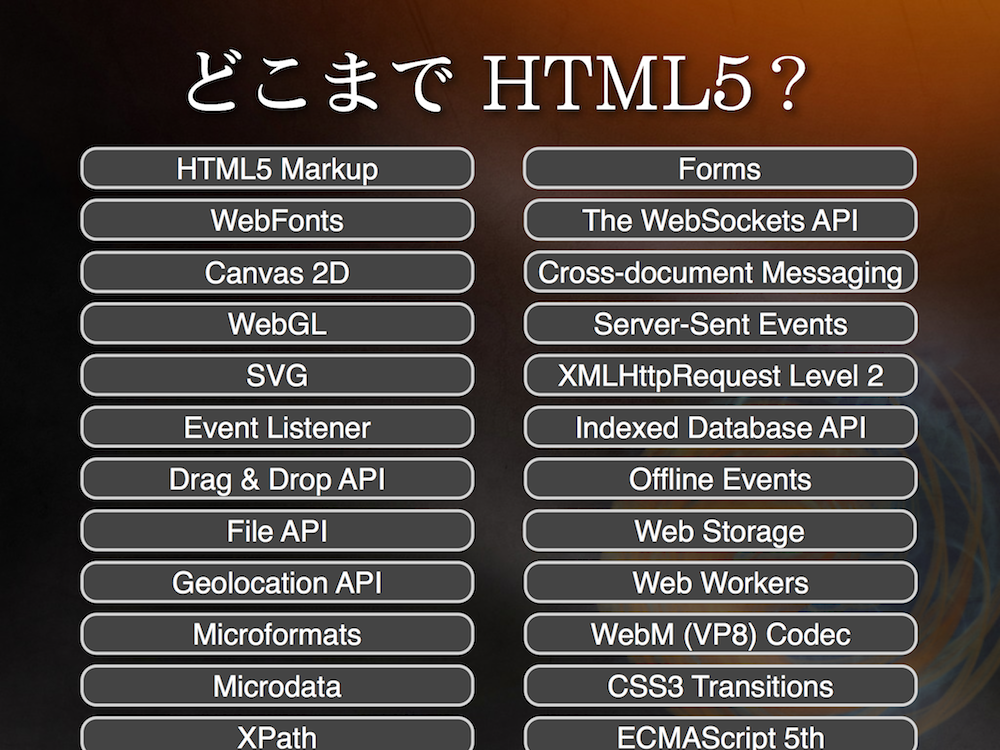
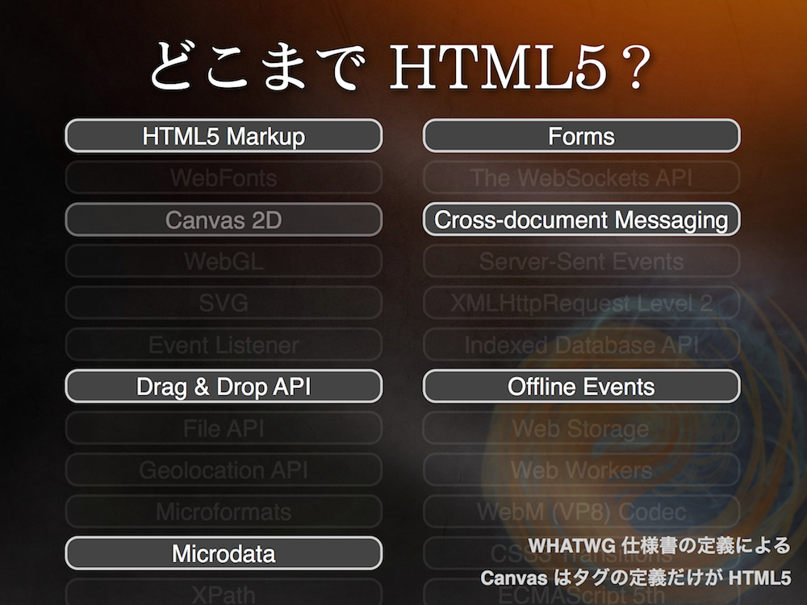
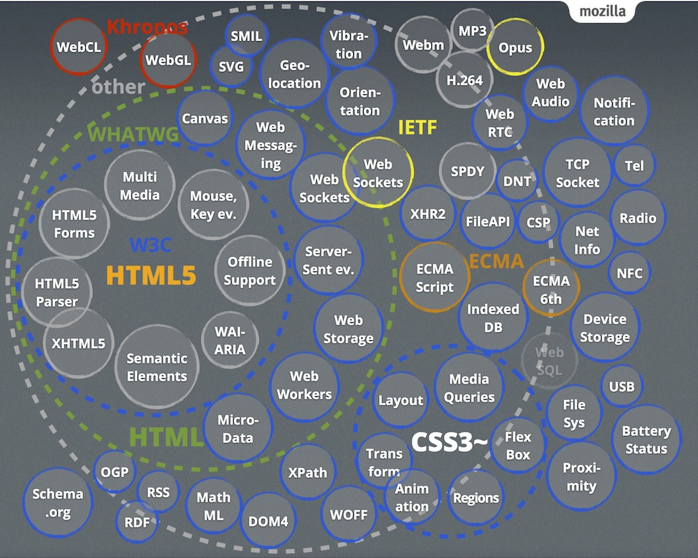
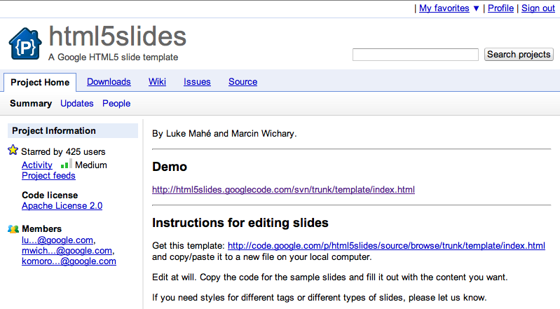

Google Chrome 21 over
http://bit.ly/html5dotnet
HTML5、どう使う？
ひらい さだあき
2012/08/25
第9回 .NET中心会議 @ドリコム
http://bit.ly/html5dotnet
Agenda
- Profile
- History
- HTML5
- Samples
- HTML5、どう使う？
- まとめ
Profile
- ひらい さだあき
- html5j.org / HTML5とか勉強会 スタッフ
- about.me/sada_h / @sada_h / techlog
- 執筆
History
ウェブの進化
The History of HTML5
Via: Wix.com
HTML5: Past, Present & Future
W3C 仕様策定の流れ
- 作業草稿（Working Draft, WD）
- 最終草案（Last Call Working Draft）
HTML5はここ(2011/05/25) - 勧告候補（Candidate Recommendation, CR）
- 勧告案（Proposed Recommendation, PR）
- W3C勧告（W3C Recommendation, REC）
HTMLの歴史
| Year | Spec | Topic |
|---|---|---|
| 1993 | HTML 1.0 | IEFT標準化 |
| 1997 | HTML 3.2 | W3C勧告 W3Cではじめての勧告 |
| 1997 | HTML 4.0 | W3C勧告 |
| 1999 | HTML 4.0.1 | W3C勧告 |
| 2000 | XHTML 1.0 | W3C勧告 HTML 4.0.1をXMLで再定義 |
| 2001 | XHTML 1.1 | W3C勧告 機能をモジュール化 |
| 2007 | HTML5 | W3Cで検討開始(WG設立) |
| 2009 | XHTML 2.0 | XHTML2 WG 活動停止 |
| 2011 | HTML5 | W3C 最終草案 |
WHATWG
Web Hypertext Application Technology Working Group
2004年に Apple、Mozilla、Opera が WHATWG 設立
ブラウザベンダーはWebアプリケーションのために、HTMLを拡張したかった。
しかし、その当時のW3Cはあまり興味を示さなかった。
Web Applications 1.0 / Web Forms 2.0 を WHATWG が策定した。
It is necessary to evolve HTML incrementally. The attempt to get the world to switch to XML, including quotes around attribute values and slashes in empty tags and namespaces all at once didn't work.
HTML5
2007年、W3C HTML Working Group設立
Web Applications 1.0をベースに、HTML5としての標準化を推進
W3Cより、2008年01月22日に HTML5 の最初の草案が発表
- アプリケーション
- セマンティクス
- 後方互換性
HTML5 Abstract
This specification defines the 5th major revision of the core language of the World Wide Web: the Hypertext Markup Language (HTML). In this version, new features are introduced to help Web application authors, new elements are introduced based on research into prevailing authoring practices, and special attention has been given to defining clear conformance criteria for user agents in an effort to improve interoperability.
HTML5

どこまでHTML5?
どこまでHTML5?

どこまでHTML5?

どこまでHTML5?

SEMANTICS
Giving meaning to structure, semantics are front and center with HTML5. A richer set of tags, along with RDFa, microdata, and microformats, are enabling a more useful, data driven web for both programs and your users.
OFFLINE & STORAGE
Web Apps can start faster and work even if there is no internet connection, thanks to the HTML5 App Cache, as well as the Local Storage, Indexed DB, and the File API specifications.
DEVICE ACCESS
Beginning with the Geolocation API, Web Applications can present rich, device-aware features and experiences. Incredible device access innovations are being developed and implemented, from audio/video input access to microphones and cameras, to local data such as contacts & events, and even tilt orientation.
CONNECTIVITY
More efficient connectivity means more real-time chats, faster games, and better communication. Web Sockets and Server-Sent Events are pushing (pun intended) data between client and server more efficiently than ever before.
MULTIMEDIA
Audio and video are first class citizens in the HTML5 web, living in harmony with your apps and sites. Lights, camera, action!
3D, GRAPHICS & EFFECTS
Between SVG, Canvas, WebGL, and CSS3 3D features, you're sure to amaze your users with stunning visuals natively rendered in the browser.
PERFORMANCE & INTEGRATION
Make your Web Apps and dynamic web content faster with a variety of techniques and technologies such as Web Workers and XMLHttpRequest 2. No user should ever wait on your watch.
CSS3
CSS3 delivers a wide range of stylization and effects, enhancing the web app without sacrificing your semantic structure or performance. Additionally Web Open Font Format (WOFF) provides typographic flexibility and control far beyond anything the web has offered before.
Samples
HTML5Slides

html5slides - A Google HTML5 slide template - Google Project Hosting
Media Queries (Responsive Web Design)
@media screen and (min-width:480px){}
@media screen and (min-width:768px){}
@media screen and (min-width:1024px){}
@media screen and (min-width:1280px){}
WebGL Bookcase
Speech Input
<input type="text" x-webkit-speech />
Page Visibility API
Fullscreen API
HTML5 Terminal
WebFonts & Canvas
var ctx = document.getElementById("canvas-area").getContext("2d");
ctx.textAlign = "center";
ctx.textBaseline = "middle";
document.getElementById("canvas-draw1").addEventListener("click", function(event) {
ctx.fillStyle = "red";
ctx.font = "72px 'Monofett', cursive";
ctx.fillText("WebFonts", 400 , 50);
});
WebFonts & Canvas Effects
getUserMedia
// カメラからの入力をとってくる
navigator.webkitGetUserMedia(
{ video: true, audio: true },
function(stream) {
// videoのsrcにカメラからのstreamを渡す
v.src = window.webkitURL.createObjectURL(stream);
},
function(error) {console.log(error);}
);
HTML5 どう使う？
ブラウザの対応状況
- HTML5 Readiness
- When can I use... Support tables for HTML5, CSS3, etc
- Mobile HTML5 - compatibility tables for iPhone, Android, BlackBerry, Symbian, iPad and other mobile devices
- CoreMob (www.coremob.org): Mobile Web App Profile
- HTML5 & CSS3 Support, Web Design Tools & Support - FindMeByIP - CSS3 & HTML5 Browser Support
HTML5 使いどころ。(独断と偏見で！)
- Mobile / Smart Device
- HTML5 MarkUp
- CSS3
- jQuery Mobile
- geoLocation API
- Offline / Storage
- App Cache
- WebStorage
- (Web SQL) / (Indexed DB)
Webサイト / Webアプリケーション
- Enterprise
- B2C
- Social Game
- PCからしか使わない業務アプリケーション
- いろいろなブラウザからアクセスされるB2Cサイト
- スマホ、ガラケーに対応したソーシャルゲーム
いろいろありますが、既存アプリケーションのスマートデバイス対応って、けっこう多くないですか？
僕の所感。
PC向け業務アプリケーションを、HTML5対応してもあまり嬉しくないような。doctype変えました！とか。
キャンペーンサイトとか、ゼロから作るサイトなら、最初からHTML5にしておくといいと思う。
レスポンシブウェブデザインを利用したり。
スマホ向けサイトでは、HTML5使わないと、むしろ辛そう。
業務アプリケーションも、スマホ対応するならHTML5を使ったほうが幸せかも。
(もちろんネイティブもいいと思う)
Mobile / Smart Device
- HTML5 Markup
- セマンティクスを意識して。
- もちろん div だらけでも動くけど、先を見越してちゃんとマークアップするほうがいい。
- CSS3
- スマホは非力。ネットワークも細い。
- 画像の代わりにCSS3でデザインを。
- アニメーションが必要なら、まずはCSSで。(でもデバイスごとに要検証)
- CSS3でできることはたくさんある。
Mobile / Smart Device
- jQuery Mobile
- みんな使ってる！
- 対応しているデバイスの多さが魅力。
- バージョンアップが早いので、ついていくのはちょっと大変。
- JavaScriptなしで、それなりの見た目が作れるけど、いろいろやるならやっぱりJavaScriptを使いたい。
- ページ遷移など、基本的な仕組みは理解する必要がある。
- パフォーマンスや、セキュリティにも気を付ける。
Mobile / Smart Device
- geoLocation API
- とりあえず使いたいと言われることが多いような。
- コードは簡単だけど、精度などを考えると大変。
- 測位方法はわからない。バッテリーの消耗にも注意が必要。
navigator.geolocation.getCurrentPosition(
function (position) {
position.coords.latitude;
lng = position.coords.longitude;
console.log(lat);
console.log(lng);
}
);
Offline / Storage
- App Cache
- 多くのブラウザが対応している。
- キャッシュマニフェストにキャッシュするファイルを指定する。
- 静的ファイルのキャッシュに。
- マニフェストを更新しないと、キャッシュが新しくならない。
- JavaScriptからキャッシュの進捗状況のイベントを取得できる。
Offline / Storage
- Web Storage
- Session Storage と Local Storage
- key-value形式で、手軽にデータを保存できる
- 保存できるのはテキストデータのみ。オブジェクトは保存できない。
- 同期処理で保存する。
Offline / Storage
- Indexed DB
- Object Storeにデータを保存する。
- JavaScriptのオブジェクトも保存できる。
- 非同期で保存する。
- まだまだ実装中。
- Web SQL Database
- 仕様策定が中断されたけど、スマートデバイスはけっこう対応している
- おすすめはできないけど、どうしても使いたければいいかも。
いろいろ確認するために
まとめ
HTML5、どう使う？
- すべてを、一度に変える必要はありません。
- 使いやすいところから。
- 安定している仕様から。
- でも、正式な勧告にはなっていないけど、HTML5はいろいろなところで使われています。
- HTML5で、文書はよりセマンティックに。
- HTML5で、Webはもっとアプリケーションに。
Thank you. Any Questions?
http://bit.ly/html5dotnet